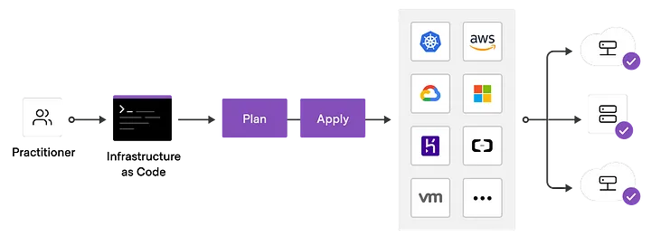
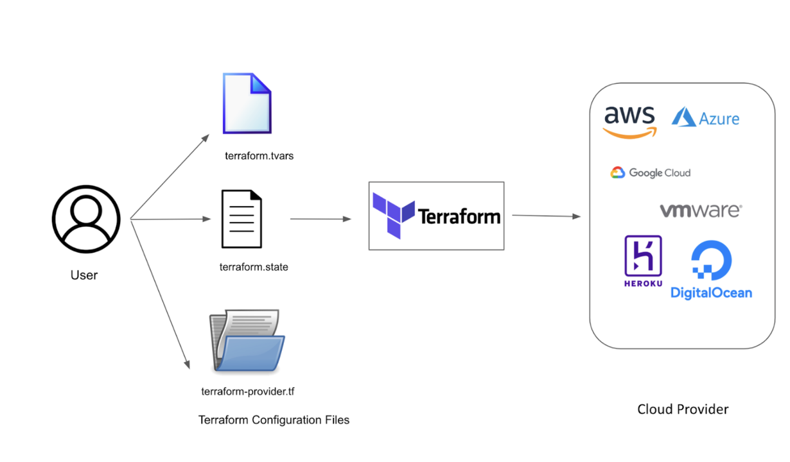
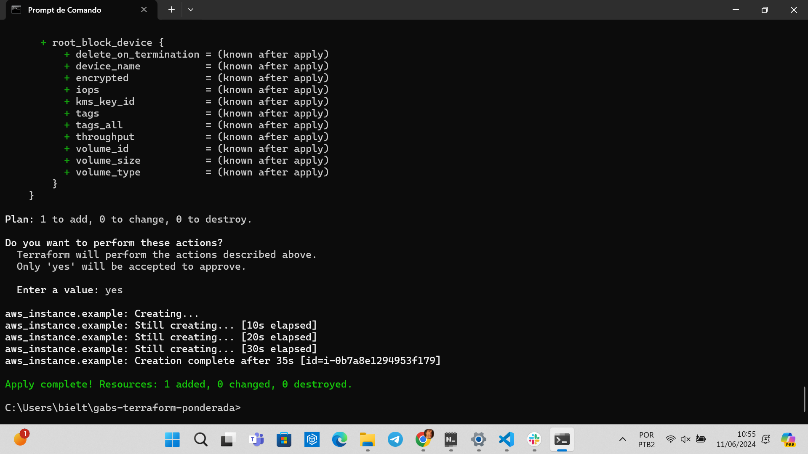
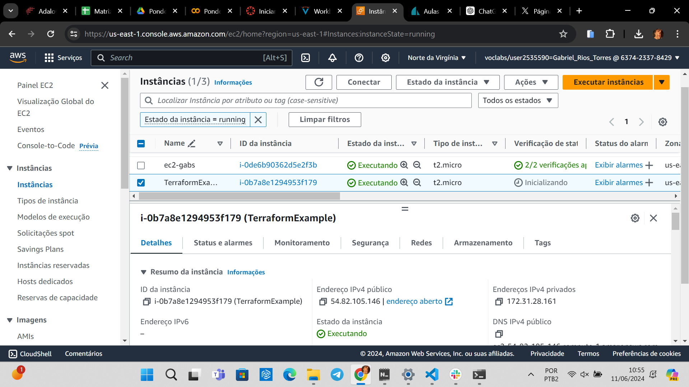
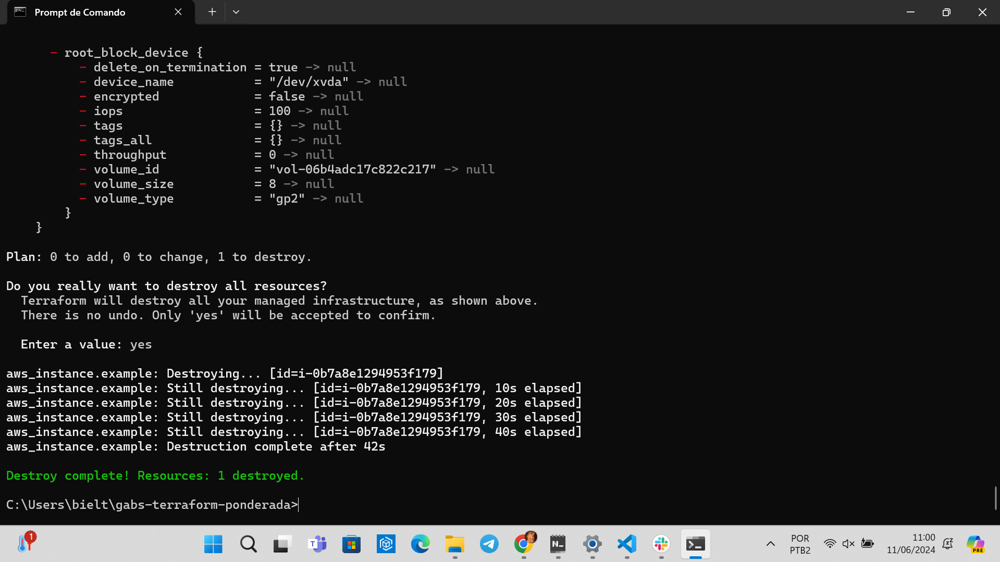
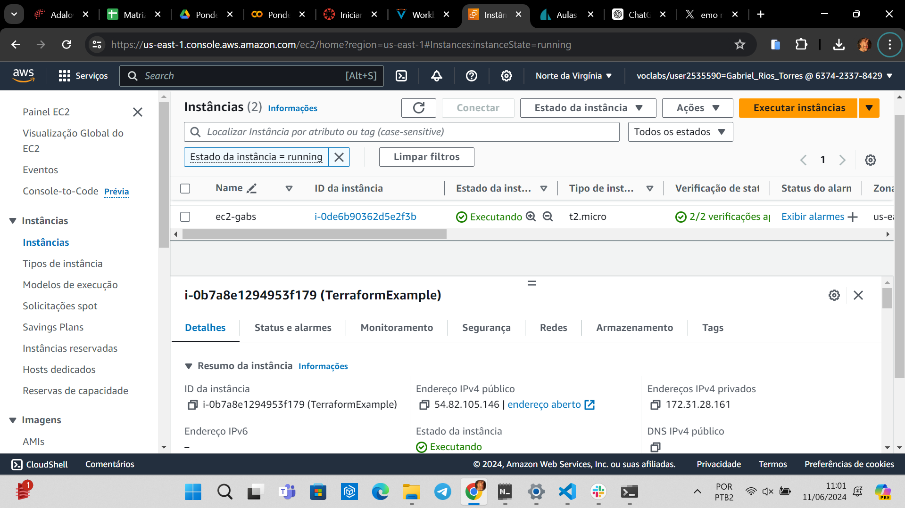

Ponderada de Terraform da semana 7 do Gabs
Sumário
1. Conceitos
1.1 Infraestrutura como Código

HASHICORP. What is Infrastructure as Code with Terraform?. Disponível nas Referências [1].
Infraestrutura como Código (IaC) é uma abordagem que permite gerenciar e provisionar recursos de tecnologia da informação (TI) por meio de arquivos de configuração, em vez de processos manuais. Esses arquivos de configuração descrevem a infraestrutura desejada de maneira declarativa ou imperativa, e são usados por ferramentas de automação para criar e gerenciar os recursos de TI necessários.
Imagine que você está construindo uma cidade e precisa garantir que todas as casas, ruas e serviços estejam exatamente no lugar certo. Tradicionalmente, você faria isso manualmente, um tijolo de cada vez, o que pode levar muito tempo e causar muitos erros.
Agora, pense que você tem um plano detalhado no papel, que descreve exatamente onde cada casa, rua e serviço deve estar. Em vez de construir tudo manualmente, você entrega esse plano a um robô que é capaz de seguir as instruções e construir tudo automaticamente, exatamente como descrito no papel.
Infraestrutura como Código (IaC) é como esse plano detalhado. Em vez de configurar servidores e redes manualmente, você escreve um arquivo de configuração que descreve exatamente como a infraestrutura deve ser. Esse arquivo é então entregue a uma ferramenta de automação (o "robô"), que lê as instruções e cria toda a infraestrutura automaticamente, de forma precisa e repetível.
Por exemplo:
-
Sem IaC: Você precisa configurar um servidor. Então, você entra no servidor, instala o sistema operacional, configura a rede, instala as aplicações, e assim por diante. Isso precisa ser feito para cada servidor, o que pode ser trabalhoso e propenso a erros.
-
Com IaC: Você escreve um arquivo que diz "quero 3 servidores, cada um com esse sistema operacional, essa configuração de rede, e essas aplicações instaladas". A ferramenta de IaC lê esse arquivo e faz tudo isso por você, em questão de minutos.
1.2 Terraform

Terraform: Gerenciamento de Infraestrutura como Código com Exemplos Práticos. Disponível nas Referências [2].
Terraform é uma ferramenta de infraestrutura como código (IaC).
Ela permite que você defina e provisione a infraestrutura de TI em várias plataformas de forma segura e eficiente usando uma linguagem de configuração simples e declarativa.
Com o Terraform, você escreve arquivos de configuração que descrevem os recursos de infraestrutura desejados. Esses recursos podem incluir servidores, balanceadores de carga, redes, bancos de dados, entre outros.
Uma vez que a infraestrutura está definida nos arquivos de configuração, você pode usar o Terraform para criar e gerenciar esses recursos automaticamente. Ele se conecta aos provedores de serviços (como AWS, Azure, Google Cloud, etc.) para provisionar e gerenciar os recursos conforme especificado.
Antes de aplicar as mudanças, o Terraform gera um plano de execução que mostra o que será alterado, adicionado ou removido. Isso permite que você revise as mudanças antes de aplicá-las, minimizando riscos. Após revisar o plano de execução, você pode aplicar as mudanças, e o Terraform provisiona ou modifica os recursos conforme necessário. O Terraform mantém um arquivo de estado que registra a infraestrutura gerenciada, permitindo que ele rastreie recursos e suas mudanças ao longo do tempo.
2. Ponderada
A ponderada da semana tem como objetivo criar uma Instância EC2 com Terraform. O passo a passo que foi realizado segue abaixo.
- Instalação do Terraform CLI (via Powershell - Administrador)
- Instalação do AWS CLI (via Powershell - Administrador)
- Configuração das credenciais AWS (via Powershell - Administrador)
- Criação do arquivo main.tf
- Inicialização do terraform (
terraform plan) - Aplicando a configuração (
terraform apply)  - Verificar a criação da instância na AWS 
- Limpando a infraestrutura (
terraform destroy)  - Verificar se a instância foi deletada 
- Documentação
O tutorial do Professor Afonso está disponível no link.
3. Referências
[1]. HASHICORP. What is Infrastructure as Code with Terraform?. Disponível no link. Acesso em: 16 jun. 2024.
[2]. ALVES JUNIOR, Dario. Terraform: Gerenciamento de Infraestrutura como Código com Exemplos Práticos. 28 abr. 2023. Disponível no link. Acesso em: 16 jun. 2024.